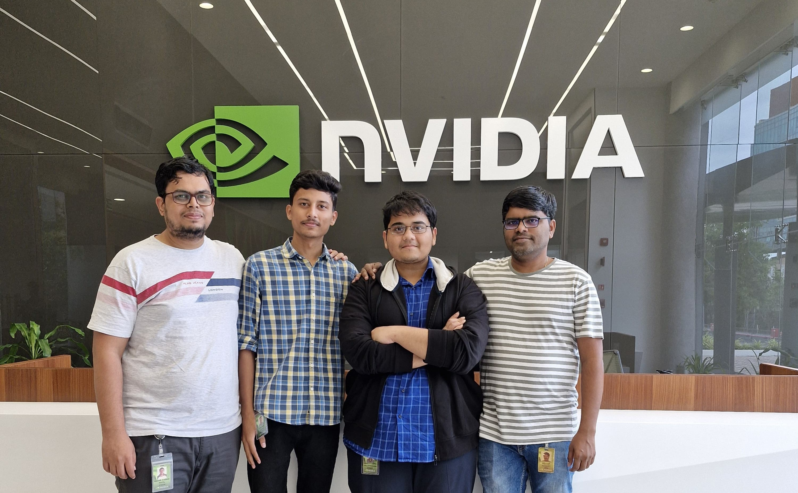

My internship @ Nvidia

Picture with my mentor and team at NVIDIA
During the summer of 2024, I had the privilege of interning at NVIDIA as a Hardware ASIC Intern within the CPU team. My primary
focus was on automated code generation for UVM Flags.
I have generated UVM flags for sub-fields in transactions of an existing VIP and generated the control logic based on the newly
added sub-field flags. I have also perfomed exhaustive verification of the functionality of the sub-field flags through Back-to-Back
testing. I am proud to report that these tests achieved a 100% success rate, demonstrating the reliability and accuracy of the addit-
ions. I have fully automated the UVM flag generation, control-logic generation and Back-to-Back verification generation using Python.
Thanks to this internship, I gained hands-on experience with code automation and verification. I have also gained experience working
in an industry setting, collaborating with colleagues, working with tight deadlines, efficient communication and presentation skills.